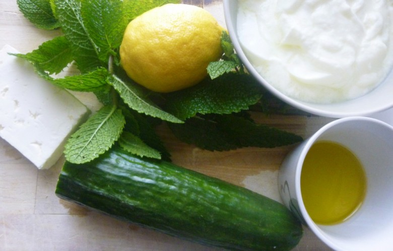
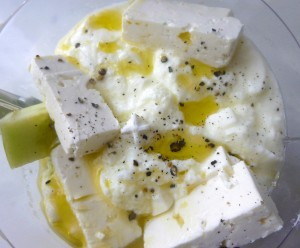
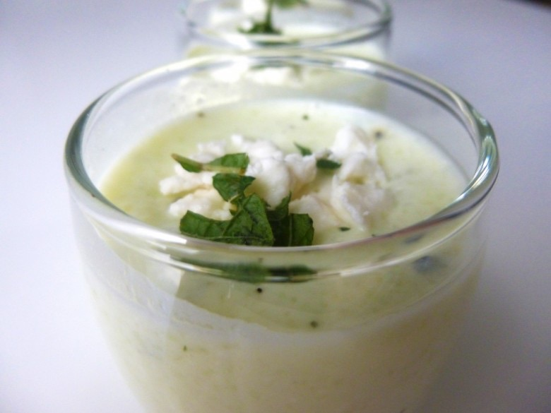

Verrine concombre-feta-menthe

Bonjour tout le monde!! Je ne sais pas quel temps il fait chez vous mais ici il fait très chaud! Je vous propose donc une verrine concombre à la feta et à la menthe fraîche
Rien de mieux qu’une petite verrine en entrée ce soir ! Idéal aussi en apéro cette recette est ultra légère (idéale pour la fatale épreuve du maillot cet été!!!) et très rafraîchissante.
A vos blenders!
Ingrédients
- yaourt nature - 3
- plaque de feta - 1/2
- concombre - 1
- jus de citron - 3 càs
- huile d'olive - 2 càs
- menthe fraîche - 1 bouquet
Instructions
- Dans le bol du mixeur verser les yaourts , la feta coupée grossièrement et le concombre coupé en morceaux
- Ajouter 3 cuillères à soupe de jus de citron de la menthe hachée et 2 cuillère à soupe d'huile d'olive
- Salez , poivrez
- Arrêter de mixer quand la préparation commence à être mousseuse.
- Verser la préparation dans vos verrines
- Décorer comme vous le sentez! Moi j'ai mis un peu de menthe hachée et quelques petits morceaux de feta!
- Laissez minimum 1 heure au réfrigérateur avant de servir et déguster frais



Les tips de la communauté
4 commentaires
Verrine appréciée comme soupe froide rafraîchissante. Une lectrice mentionne avoir découvert une variante avec chantilly à la menthe dans un restaurant.
Astuces
- Ajouter une chantilly à la menthe pour plus de gourmandise
Variantes suggérées
- Version avec chantilly à la menthe